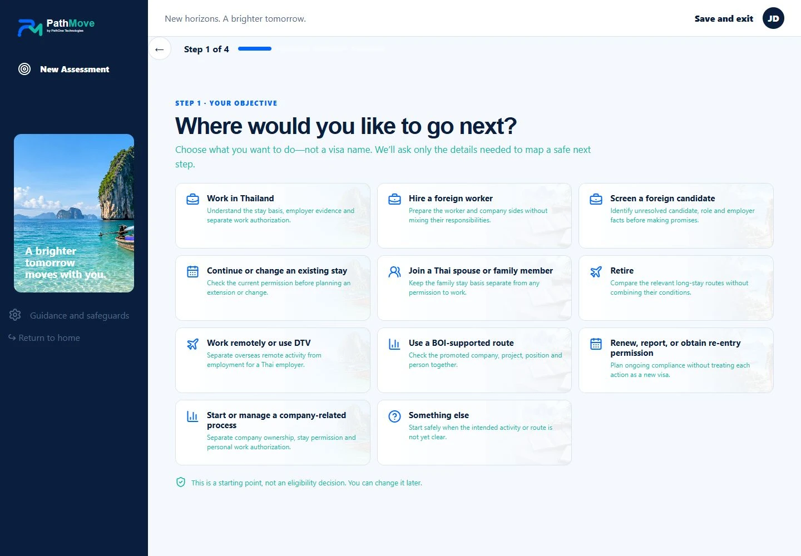
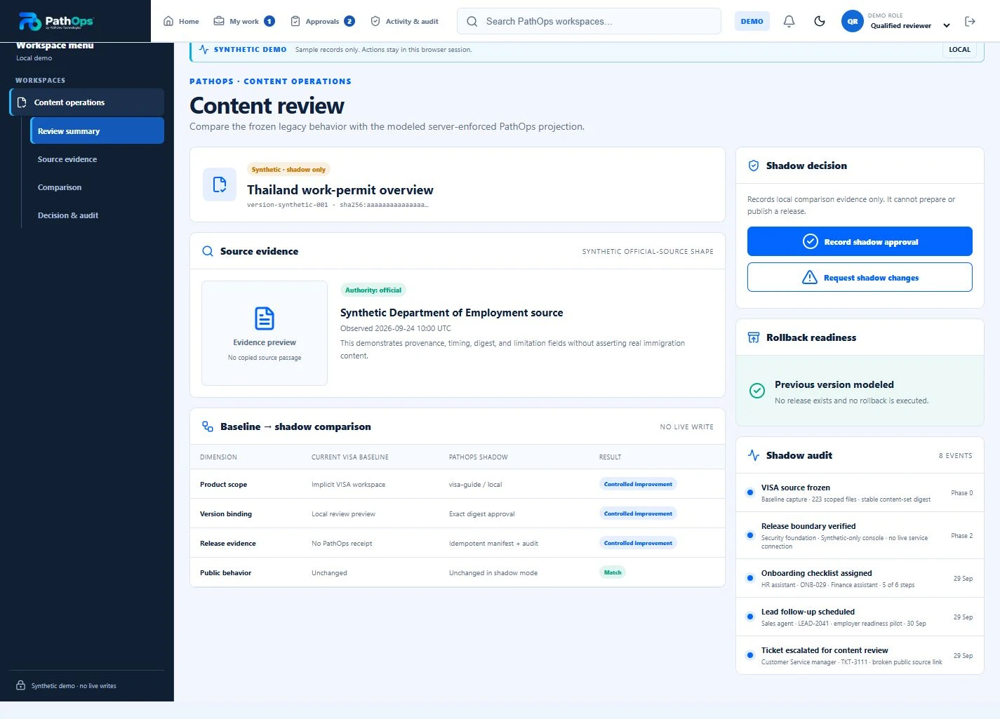

PRODUCT ENGINEERING / OCTOBER 2026
PathMove, PathOps and PathAssure
The customer journey, the staff tools and my idea for operational readiness.
Current developmentPathMove is a local demo. PathOps has a demo staff console and implemented release-preparation functions. PathAssure is a concept. The screenshots use fictional data.
01 / ARCHITECTURE
What each project does
I am building PathMove for customers and PathOps for the staff doing the reviews and approvals. PathAssure is my concept for checking readiness before launch and following the operation afterwards.
Guided intake and customer-safe content.
Product, environment and permitted fields.
Assigned review, exact-version approval and release preparation.
Approved content with freshness and source context.
The PathMove demo currently reads sample content from a local fixture.
02 / PATHMOVE

Ask what the person wants to do first.
I built the frontend in React and TypeScript with Vite. The first question is what the person wants to do. From there, the journey asks the relevant questions without expecting them to know which visa to choose.

Customer state and professional workspaces
I built different journeys for individuals, recruiters, employers and agencies, with preparation steps, next actions and handover. I use fictional records while developing them.
The content adapter
The TypeScript adapter checks the product, environment and contract version before reading the content. The contract includes review status and date, canonical path, indexability and permission summaries.
Reject an invalid response
The parser checks context, version, release state, digest format, field shape and source safety. An unexpected field or incompatible environment should produce a controlled failure state. Loading, stale, unavailable and forbidden are distinct states in the interface.
Demo setup
The demo loads sample content from the same site. Live backend access and payments are disabled, and document handling is visual-only.

03 / PATHOPS

Review the right version, with the right permissions.
I built the React console with staff workspaces, review queues, approvals and audit views. Role switching uses fictional staff roles so I can work through the interface. Live authentication is not enabled in the console.

Release preparation
I implemented functions for release preparation and reading public content. Preparing a release requires an approved content version with a matching SHA-256 digest. It creates the release record; publishing is a separate step.
Identity and authorization
The callable entry point requires App Check. Actor identity comes from the authenticated request context, and active grants are resolved server-side. A role supplied in the request body is not trusted as authority. Permission checks bind the action to its product and environment.
Atomic audit and idempotency
The repository uses a Firestore transaction to couple release creation, audit recording and an idempotency receipt. An identical retry can return its original result. Reusing the same key with changed input is a conflict, rather than a second release.
Approve a specific version
The approval belongs to one content digest. Changing the content requires a new approval.
Keep client access closed
The project has deny-all client rules for its protected backend data. Customer-facing content is shaped into a versioned projection rather than exposing staff collections. Stable error codes and a correlation identifier support diagnosis without returning an internal exception.

A simplified release-preparation sequence
authenticated request + App Check
product / environment / action
exact approved version digest
request identity for safe retries
↓
server resolves active grants
↓
validate request and approval relationship
↓
transaction: release + audit + idempotency receipt
↓
prepared result or stable error + correlation identifier04 / PATHASSURE
Are we ready to go live?
PathAssure is my concept for an operational-readiness and assurance platform. The starting questions are practical: are we ready to go live, are we under control after launch, and which emerging risks deserve attention?

The proposed lifecycle
Prepare, validate, go live, operate, monitor, predict and improve. A readiness item would carry an owner, supporting evidence, dependencies and a review state. After launch, that record would remain useful context for maintenance, incidents and recovery planning.
What I want to connect
I want to connect the infrastructure, systems, vendors, staff training, documentation and handover, with evidence for each readiness decision.
What remains to be built
I have developed the product structure, use cases and initial architecture. The platform and integrations remain to be built.
Forecasting
I want to explore forecasting that explains the risk and the information behind it. This remains part of the concept, with no trained model yet.